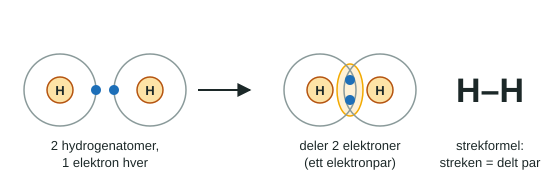
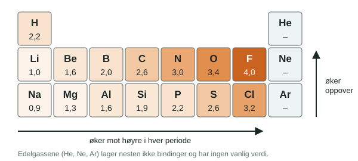
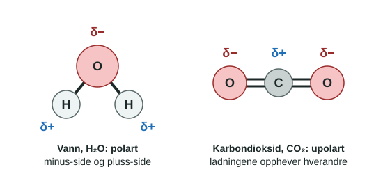
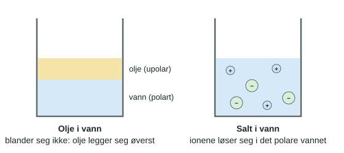
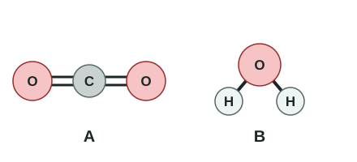

Kovalent binding og polaritet
Vann, olje, naturgass og de fleste løsemidler er bygd opp av molekyler. I molekyler holdes atomene sammen av kovalente bindinger. Om et molekyl er polart eller ikke, avgjør blant annet om stoffer blander seg. Det er grunnen til at olje og vann kan skilles i en separator.
Atomer som deler elektroner
På forrige side så du at et metall gir elektroner til et ikke-metall. Når to ikke-metaller møtes, vil begge heller ta opp elektroner enn å gi fra seg. I stedet deler de elektroner. Et delt elektronpar holder atomene sammen. Det kalles en kovalent binding eller elektronparbinding.

Hvor mange bindinger et atom lager, avhenger av hvor mange elektroner det mangler for å få fullt ytterskall:
| Atom | Ytterelektroner | Mangler | Antall bindinger |
|---|---|---|---|
| H | 1 | 1 | 1 |
| O | 6 | 2 | 2 |
| N | 5 | 3 | 3 |
| C | 4 | 4 | 4 |
| Cl | 7 | 1 | 1 |
Eksempel
Løsning:
- Oksygen har 6 ytterelektroner og mangler 2. Det lager 2 bindinger.
- Hvert hydrogenatom mangler 1 elektron og lager 1 binding.
- Oksygen deler ett elektronpar med hvert av de to hydrogenatomene.
Svar: \( \ce{H-O-H} \). Oksygen har nå 8 elektroner rundt seg: 2 delte par (strekene) og 2 elektronpar som ikke er med i bindinger. Hvert hydrogenatom har 2.
Dobbelt- og trippelbinding
Noen atomer deler mer enn ett elektronpar:
- Enkeltbinding, 1 delt par: hydrogen, \( \ce{H-H} \)
- Dobbeltbinding, 2 delte par: oksygen, \( \ce{O=O} \)
- Trippelbinding, 3 delte par: nitrogen, \( \ce{N#N} \)
Trippelbindingen i nitrogen er svært sterk, og derfor reagerer nitrogengass lite. Industrien bruker nitrogen som inertgass. Nitrogen fylles over brennbare væsker i tanker, slik at det ikke kommer til oksygen.
Elektronegativitet
Elektronegativitet er hvor sterkt et atom trekker på de delte elektronene i en binding. Jo høyere tall, jo sterkere trekker atomet. Elektronegativiteten øker mot øvre høyre hjørne av periodesystemet. Fluor har høyest verdi.

Polar og upolar binding
Når to like atomer deler elektroner, trekker de like sterkt. Elektronene ligger midt mellom atomene. Bindingen er upolar.
Når to ulike atomer deler elektroner, trekkes elektronene nærmere det atomet som har høyest elektronegativitet. Det atomet blir litt negativt. Det skrives δ− («delta minus»). Det andre atomet blir litt positivt, δ+. Bindingen er polar.
Forskjellen i elektronegativitet forteller hva slags binding det blir. Grensene er ikke skarpe, men dette er en grei tommelfingerregel:
| Forskjell i elektronegativitet | Type binding |
|---|---|
| mindre enn ca. 0,5 | upolar kovalent binding |
| ca. 0,5–1,7 | polar kovalent binding |
| mer enn ca. 1,7 | ionebinding |
- H–Cl: \( 3{,}2 - 2{,}2 = 1{,}0 \). Det er en polar kovalent binding.
- Na–Cl: \( 3{,}2 - 0{,}9 = 2{,}3 \). Det er en ionebinding.
- C–H: \( 2{,}6 - 2{,}2 = 0{,}4 \). Det er en nesten upolar binding.
C–H-bindingen er nesten upolar. Derfor er hydrokarboner, stoffer som bare består av karbon og hydrogen, upolare. Olje og naturgass består for det meste av hydrokarboner.
Polare og upolare molekyler
Et molekyl med polare bindinger er ikke alltid polart. Det avhenger også av formen på molekylet. Vann er vinklet fordi de to elektronparene på oksygen som ikke er med i bindinger, skyver hydrogenatomene ned på samme side.

Polariteten avgjør hva som løser seg i hva. Huskeregelen er likt løser likt:
- Polare stoffer og mange salter løser seg i vann, som er polart. Noen salter, for eksempel sølvklorid, løser seg nesten ikke.
- Upolare stoffer, som olje og fett, løser seg i upolare løsemidler, men ikke i vann.

Derfor blander ikke olje og vann seg. I olje- og gassindustrien skilles olje og vann i separatorer. Dette lærer du mer om under enhetsoperasjoner.
Upolare løsemidler som brukes til avfetting, for eksempel white spirit og bensin, er brannfarlige, og dampen er helseskadelig. Bruk avtrekk eller god ventilasjon, hold dem borte fra varme og gnister, og les sikkerhetsdatabladet.
Test deg selv
Hvilket av molekylene på figuren er polart?

- A
- B
- begge
B er vann. Det er vinklet og får en negativ og en positiv side. A er karbondioksid. Det er rett, og de polare bindingene opphever hverandre.
Hva skjer i en kovalent binding?
- Atomene deler elektronpar.
- Et atom gir elektroner til et annet.
- Elektronene beveger seg fritt.
Kovalent binding dannes typisk mellom ikke-metaller.
Hvor mange kovalente bindinger lager et karbonatom?
- 2
- 4
- 6
Karbon har 4 ytterelektroner og mangler 4.
Hvorfor reagerer nitrogengass (N2) så lite?
- Det er en edelgass.
- Trippelbindingen er svært sterk.
- Det har ionebinding.
Tre delte elektronpar er vanskelige å bryte.
O–H: 3,4 − 2,2 = 1,2. Hva slags binding er det?
- upolar kovalent
- polar kovalent
- ionebinding
Forskjellen ligger mellom ca. 0,5 og 1,7.
Hvorfor løser ikke olje seg i vann?
- Olje er tyngre enn vann.
- Vann er polart og olje er upolar.
- Olje er et salt.
Likt løser likt.
Ordliste
| Begrep | Forklaring | Engelsk |
|---|---|---|
| kovalent binding | Binding der to atomer deler ett eller flere elektronpar. Dannes typisk mellom ikke-metaller. | |
| strekformel | Tegning av et molekyl der hver strek er ett delt elektronpar. | |
| dobbeltbinding | To atomer deler to elektronpar. | |
| trippelbinding | To atomer deler tre elektronpar. | |
| inertgass | Gass som nesten ikke reagerer, for eksempel nitrogen eller argon. | inert gas |
| elektronegativitet | Hvor sterkt et atom trekker på de delte elektronene i en binding. | |
| polar binding | Kovalent binding der de delte elektronene trekkes nærmere det atomet som har høyest elektronegativitet. | |
| dipol | Molekyl med en positiv og en negativ side, for eksempel vann. | |
| likt løser likt | Polare stoffer løser seg i polare løsemidler (som vann), og upolare stoffer løser seg i upolare løsemidler. |
Les mer
- Kjemien stemmer, kapittel 3. Oppgaver: 3.4.1 og 3.4.2 a)–c).
Om kildene: Teksten, eksemplene og figurene på denne siden er laget for dette nettstedet. Siden bygger på undervisningsopplegg i kjemiprosess- og laboratoriefag ved Sauda vgs, som er utarbeidet med utgangspunkt i blant annet Kjemien stemmer, Laboranten og åpne nettkilder.